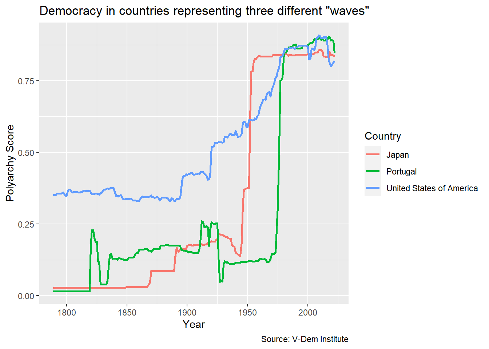

library(readr)
library(dplyr)
library(ggplot2)Module 2.1
Visualizing Data With ggplot2
Prework
- Install the
scalespackage (install.packages("scales")) - Have a look at the documentation for ggplot2
- Familiarize yourself with the
ggplot2cheatseet - Generate a quarto document named “module-2.1.qmd” in youe modules project folder so that you can code along with me
If you have installed the Tidyverse, then you should already have the packages for this model, including ggplot2. You can go ahead and load ggplot2 along with readr and dplyr.
Note that you could also load these three packages by running library(tidyverse). However, it is good to be intentional about which packages we are loading as we are learning them.
Overview
Last week we learned how to gather and wrangle data. This week we are going to start visualizing it with the ggplot2. We will learn how to make bar charts, histograms, line charts and scatter plots.
Along the way we are going to be talking about the “grammar of graphics” that ggplot2 is based on. The “gg” in ggplot stands for “grammar of graphics.” The grammar of graphics is a layered approach to constructing graphs based on a book by Leland Wilkinson.
The idea is that each visualization you make is going to contain cerain elements. You will start with some data. Then you will incorporate some “aesthetics” which you can think of as the dimensions of the visualization (x-axis, y-axis and color, size or shapes for additional dimensions). Next you identify a geometric obejct that you want to use such as a bar, a line or a point. From there you can customize various elements of the plot like the title and axis scales and labels.
Bar charts
Let’s get started with our first visualization–a basic bar chart. Bar charts are good for comparing data across cases. Our aim here is going to be to summarize levels of democracy across different regions like we did in the last lesson, but this time we will illustrate the differences with a chart.
We will start by loading in the dem_summary.csv file that we made in the last lesson. Next we will do our first ggplot() call. The ggplot() function takes two arguments: data and mapping. data refers to the data frame that includes the variables we want to visualize and mapping refers to the aesthetics mappings for the visualization. The aesthetics mappings are themselves presented in a quoting function aes() that defines the x and y values of the plot along with other aesthetic values like fill, color and linetype. We will focus on x and y values here and return to these additional aesthetic values later.
After our ggplot() call, we can add a series of additional functions to define our visualization following a + sign. The most important group are the geoms which will define the basic type of plot we want to make. In this case, we are calling geom_col() for our histogram and specifying that the fill color should be “steelblue.”
From there we will further customize our visualization with the labs() function to provide a title, axis labels and a caption.
dem_summary <- read_csv("data/dem_summary.csv")
ggplot(dem_summary, aes(x = region, y = polyarchy)) + # ggplot call
geom_col(fill = "steelblue") + # we use geom_col() for a a bar chart
labs(
x = "Region",
y = "Avg. Polyarchy Score",
title = "Democracy by region, 1990 - present",
caption = "Source: V-Dem Institute"
)This looks pretty good but frequently we would want the bars of our bar chart to be sorted in order of the values being displayed. Let’s go ahead and add the reorder() function to our aes() call so that we are reordering the bars based on descending values of the average polyarchy score.
ggplot(dem_summary, aes(x = reorder(region, -polyarchy), y = polyarchy)) +
geom_col(fill = "steelblue") +
labs(
x = "Region",
y = "Avg. Polyarchy Score",
title = "Democracy by region, 1990 - present",
caption = "Source: V-Dem Institute"
)Histograms
Now let’s do another ggplot() call to make a histogram. We use histograms when we want to show how our data are distributed.
We’ll start by reading in the dem_women.csv file from our previous lesson. From there, we call ggplot(), specifying the polyarchy score on x-axis. But this time we change the geom to geom_histogram(). We also change the title and axis labels to reflect the fact that we are plotting the number of cases falling in each bin.
Note
Note that we leave the y-axis blank for the histogram because ggplot will automatically know to plot the number of units in each bin on the y-axis.
dem_women_2015 <- read_csv("data/dem_women.csv") |>
filter(year == 2015)
ggplot(dem_women_2015, aes(x = polyarchy)) + # only specify x for histogram
geom_histogram(fill = "steelblue") + # geom is a histogram
labs(
x = "Polyarchy Score, 2015",
y = "Count",
title = "Distribution of democracy, 2015",
caption = "Source: V-Dem Institute"
)
Line charts
Now let’s create a line chart. Line charts are usually the best option when we want to illustrate trends in our data. For this visualization, we will try to illustrate Samuel Huntington’s waves of democracy by showing how countries representing each of the three waves. The U.S. represents the first wave, Japan the second wave starting with the allied victory in WWII, and Portugal represents the first country to transition in the third wave.
First, let’s grab the relevant data using vdemdata and dplyr. We are going to be downloading the polyarchy measure for the U.S., Japan and Portugal as far back as the data are available. So first we will select country name, year and the polyarchy schore and then we will filter the data based on the three country names. We are saving these data in an object called dem_waves_ctrs.
library(vdemdata)
dem_waves_ctrs <- vdem |>
select(
country = country_name,
year,
polyarchy = v2x_polyarchy,
) |>
filter(
country %in% c("United States of America", # select countries in this list
"Japan",
"Portugal")
)
write_csv(dem_waves_ctrs, "data/dem_waves_ctrs.csv")Next, we are going to do our ggplot() call. The data will be the dem_waves_ctrs object that we just created. For the aesthetics mapping, we will put the year on the x-axis and the polyarchy score on the y-axis. We will also specify color in the aes() call so that we can color the lines by region.
To get a line chart, we have to specify geom_line(). Then within the geom_line() function we will set the linewidth equal to ` so that the lines are a bit more visible.
Finally, we will add a labs() call as with the previous visualizations. But in addition to title, axis labels and a caption, we will also add color = "Country" to change the label of the legend to “Color” with a capital “C.”
# in this ggplot() call, we add a third dimension for line color
ggplot(dem_waves_ctrs, aes(x = year, y = polyarchy, color = country)) +
geom_line(linewidth = 1) + # our geom is a line with a width of 1
labs(
x = "Year",
y = "Polyarchy Score",
title = 'Democracy in countries representing three different "waves"',
caption = "Source: V-Dem Institute",
color = "Country" # make title of legend to upper case
)
Scatter plots
The last thing we are going to do in this lesson is to create a scatter plot. We use scatter plots in order to illustrate how two variables relate to each other (or not). In this example, we are going to illustrating modernization theory, which predicts a positive relationship between wealth and democracy, while also incorporating levels of women’s representation into our analysis.
We are going to start with the dem_women.csv file we created in Module 1.2. We will then group the data by country and calculate the mean for each variable. Note that in the group_by() call we also include region because we will want to keep it so that we can color our points by region.
dem_summary_ctry <- read_csv("data/dem_women.csv") |>
group_by(country, region) |> # group by country, keep region
summarize(
polyarchy = mean(polyarchy, na.rm = TRUE),
gdp_pc = mean(gdp_pc, na.rm = TRUE),
flfp = mean(flfp, na.rm = TRUE),
women_rep = mean(women_rep, na.rm = TRUE)
)Now let’s create our first scatter plot. Our ggplot() call looks similar to previous ones except for a few things. First we are calling geom_point() for our geom. But also notice that our aesthetics mapping includes four dimenstions: x, y, color and size. So here we are telling ggplot2 that we want wealth on the x-axis, the polyarchy score on the y-axis, to color the points based on region, and to vary the size of the points in relation to the level of women’s representation.
One last thing we want to do is to put our x-axis on a log scale and change the labels to reflect their dollar values. For the log scale, we can use the scale_x_log10() function and for the labels we can use the label_number() function from the scales package. We set the prefix to “$” and the suffix to “k” so that each number on the x-axis starts with a dollar sign and ends with “k” denoting “thousands.”
Note
We will encounter other useful scales functions including label_dollar() and label_percent() in future lessons.
Notice that in this example we introduce the scales package by including it as a prefix to the label_number() function, e.g. scales::label_number(prefix = "$", suffix = "k"). This allows us to use the package without having to load it, e.g. library(scales). It also has the benefit of generating a list of auto-complete suggestions for the many available functions in the scales package.
# in this ggplot() call we have four dimensions
# x, y, color, and size
ggplot(dem_summary_ctry, aes(x = gdp_pc, y = polyarchy, color = region, size = women_rep)) +
geom_point() + # use geom_point() for scatter plots
scale_x_log10(labels = scales::label_number(prefix = "$", suffix = "k")) +
labs(
x= "GDP per Capita",
y = "Polyarchy Score",
title = "Wealth and democracy, 1990 - present",
caption = "Source: V-Dem Institute",
color = "Region",
size = "Women Reps"
)
The plot does a good job of illustrating the basic point of modernization theory in that we do see the positive correlation between wealth and democracy. But we also see that there are some outliers and that a lot of the outlier countries are concentrated in the Middle East.
We also see that the distribution of women’s representation is somewhat orthogonal to wealth and democracy. Most wealthy western countries have high levels of women’s representation, but so do a lot of low- and middle-income countries in Africa, Asia and Latin America.
Adding a trend line
We can definitely see a relationship between wealth and democracy in the scatter plot, but how strong is it? One way to find out is to add a trend line. Let’s do this by adding another geom, geom_smooth(), and specifying a linear model with the argument method = "lm" We acn also set the linewidth of the trend line to 1 so that the line is more visible.
If we want to add a single trend while also maintaining the coloring by region, then we have to reconfigure the ggplot() call a bit. Specifically, we will want to move color = region to a separate aes() call in the geom_point() function, e.g. geom_point(aes(color = region)). If we don’t do this we will get separate trend lines for each region (try it and see!).
ggplot(dem_summary_ctry, aes(x = gdp_pc, y = polyarchy)) +
geom_point(aes(color = region)) +
geom_smooth(method = "lm", linewidth = 1) +
scale_x_log10(labels = scales::label_number(prefix = "$", suffix = "k")) +
labs(
x= "GDP per Capita",
y = "Polyarchy Score",
title = "Wealth and democracy, 1990 - present",
caption = "Source: V-Dem Institute",
color = "Region"
)
Facet wrapping
Now let’s imagine that we really interested in drilling down into the “heterogeneous effects” of wealth on democracy by region. In other words, we want to see more clearly how wealth is related to democracy in some regions but not others. For this, we can use facet_wrap() to get a separate chart for each region rather than just shading the points by region. Inside of facet_wrap() we identify region as the variable that we want to use to separate the plots, e.g. facet_wrap(~region). Notice how we have to include a tilde (~) here.
ggplot(dem_summary_ctry, aes(x = gdp_pc, y = polyarchy)) +
geom_point() +
geom_smooth(method = "lm", linewidth = 1) +
facet_wrap(~ region) +
scale_x_log10(labels = scales::label_number(prefix = "$", suffix = "k")) +
labs(
x= "GDP per Capita",
y = "Polyarchy Score",
title = "Wealth and democracy, 1990 - present",
caption = "Source: V-Dem Institute"
)
Here we can clearly see a relationship between wealth and democracy in all of the countries except for the Middle East and Africa. We could speculate that the lack of a relationship in the Middle East could be evidence of an oil curse dynamic whereas perhaps the lack of a relationship in Africa is due to weak institutions.
The relationship between wealth and democracy in the West would be apparent, but it is obscured by the fact that western countries because the high wealth and polyarchy values result in extreme bunching in the northwest quadrant of the graph. To deal with this issue, we could add the scales = "free" argument to our plot.
ggplot(dem_summary_ctry, aes(x = gdp_pc, y = polyarchy)) +
geom_point() +
geom_smooth(method = "lm", linewidth = 1) +
facet_wrap(~ region, scales = "free") +
scale_x_log10(labels = scales::label_number(prefix = "$", suffix = "k")) +
labs(
x= "GDP per Capita",
y = "Polyarchy Score",
title = "Wealth and democracy, 1990 - present",
caption = "Source: V-Dem Institute"
)
But notice there is a bit of a tradeoff here. With the scales = free option set, we now have separate axes for each of the plots. This is less of a clean look than having common x and y axes.
Labeling points
Now let’s try drilling down into one of the regions to get a better sense of what countries are driving the relationship. To do this, we can filter our data set for a region that we are interested in and then add country labels to the points in the scatter plot. Here we are going to filter for “Asia” and we will ad a geom_text() call to add country labels. In the geom_text() call we include arguments for size and vjust to adjust the size and vertical location of the labels relative to the points.
dem_summary_ctry |>
filter(region == "Asia") |>
ggplot(aes(x = gdp_pc, y = polyarchy)) +
geom_point() +
geom_text(aes(label = country), size = 2, vjust = 2) +
geom_smooth(method = "lm", linewidth = 1) +
scale_x_log10(labels = scales::label_number(prefix = "$", suffix = "k")) +
labs(
x= "GDP Per Capita",
y = "Polyarchy Score",
title = "Wealth and democracy in Asia, 1990 - present",
caption = "Source: V-Dem Institute"
)